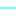

<!doctype html>
<html lang="en">
    <head>
        <meta charset="utf-8">
        <meta http-equiv="X-UA-Compatible" content="IE=edge">
        <meta name="viewport" content="initial-scale=1,user-scalable=no,maximum-scale=1,width=device-width">
        <meta name="mobile-web-app-capable" content="yes">
        <meta name="apple-mobile-web-app-capable" content="yes">
        <link rel="stylesheet" href="css/leaflet.css">
        <link rel="stylesheet" href="css/qgis2web.css"><link rel="stylesheet" href="css/fontawesome-all.min.css">
        <link rel="stylesheet" href="css/leaflet-measure.css">
        <style>
        #map {
            width: 1290px;
            height: 812px;
        }
        </style>
        <title></title>
    </head>
    <body>
        <div id="map">
        </div>
        <script src="js/qgis2web_expressions.js"></script>
        <script src="js/leaflet.js"></script>
        <script src="js/leaflet.rotatedMarker.js"></script>
        <script src="js/leaflet.pattern.js"></script>
        <script src="js/leaflet-hash.js"></script>
        <script src="js/Autolinker.min.js"></script>
        <script src="js/rbush.min.js"></script>
        <script src="js/labelgun.min.js"></script>
        <script src="js/labels.js"></script>
        <script src="js/leaflet-measure.js"></script>
        <script src="data/clippedengmap2_3.js"></script>
        <script src="data/lewisroads_4.js"></script>
        <script src="data/lcpscomp_5.js"></script>
        <script src="data/reprojectedengroadpoints_6.js"></script>
        <script>
        var map = L.map('map', {
            zoomControl:true, maxZoom:28, minZoom:1
        }).fitBounds([[50.52060369189804,-8.131213586587945],[55.1274880633934,4.231332275202199]]);
        var hash = new L.Hash(map);
        map.attributionControl.setPrefix('<a href="https://github.com/tomchadwin/qgis2web" target="_blank">qgis2web</a> &middot; <a href="https://leafletjs.com" title="A JS library for interactive maps">Leaflet</a> &middot; <a href="https://qgis.org">QGIS</a>');
        var autolinker = new Autolinker({truncate: {length: 30, location: 'smart'}});
        var measureControl = new L.Control.Measure({
            position: 'topleft',
            primaryLengthUnit: 'meters',
            secondaryLengthUnit: 'kilometers',
            primaryAreaUnit: 'sqmeters',
            secondaryAreaUnit: 'hectares'
        });
        measureControl.addTo(map);
        document.getElementsByClassName('leaflet-control-measure-toggle')[0]
        .innerHTML = '';
        document.getElementsByClassName('leaflet-control-measure-toggle')[0]
        .className += ' fas fa-ruler';
        var bounds_group = new L.featureGroup([]);
        function setBounds() {
        }
        map.createPane('pane_orengoSpNAbetweennesscentrality_modified_0');
        map.getPane('pane_orengoSpNAbetweennesscentrality_modified_0').style.zIndex = 400;
        var img_orengoSpNAbetweennesscentrality_modified_0 = 'data/orengoSpNAbetweennesscentrality_modified_0.png';
        var img_bounds_orengoSpNAbetweennesscentrality_modified_0 = [[49.81565999405304,-7.066400393831228],[57.121066516303955,2.5440139091649057]];
        var layer_orengoSpNAbetweennesscentrality_modified_0 = new L.imageOverlay(img_orengoSpNAbetweennesscentrality_modified_0,
                                              img_bounds_orengoSpNAbetweennesscentrality_modified_0,
                                              {pane: 'pane_orengoSpNAbetweennesscentrality_modified_0'});
        bounds_group.addLayer(layer_orengoSpNAbetweennesscentrality_modified_0);
        map.addLayer(layer_orengoSpNAbetweennesscentrality_modified_0);
        map.createPane('pane_lewisedgebetweenness_modified_1');
        map.getPane('pane_lewisedgebetweenness_modified_1').style.zIndex = 401;
        var img_lewisedgebetweenness_modified_1 = 'data/lewisedgebetweenness_modified_1.png';
        var img_bounds_lewisedgebetweenness_modified_1 = [[49.64587338763951,-6.690813851746875],[56.4834164193,2.4240535372121808]];
        var layer_lewisedgebetweenness_modified_1 = new L.imageOverlay(img_lewisedgebetweenness_modified_1,
                                              img_bounds_lewisedgebetweenness_modified_1,
                                              {pane: 'pane_lewisedgebetweenness_modified_1'});
        bounds_group.addLayer(layer_lewisedgebetweenness_modified_1);
        map.addLayer(layer_lewisedgebetweenness_modified_1);
        map.createPane('pane_clippedmodhighways_2');
        map.getPane('pane_clippedmodhighways_2').style.zIndex = 402;
        var img_clippedmodhighways_2 = 'data/clippedmodhighways_2.png';
        var img_bounds_clippedmodhighways_2 = [[49.79916784603605,-8.728305244536628],[55.156113028661,5.561889298301778]];
        var layer_clippedmodhighways_2 = new L.imageOverlay(img_clippedmodhighways_2,
                                              img_bounds_clippedmodhighways_2,
                                              {pane: 'pane_clippedmodhighways_2'});
        bounds_group.addLayer(layer_clippedmodhighways_2);
        map.addLayer(layer_clippedmodhighways_2);
        function pop_clippedengmap2_3(feature, layer) {
            var popupContent = '<table>\
                    <tr>\
                        <td colspan="2">' + (feature.properties['featurecla'] !== null ? autolinker.link(feature.properties['featurecla'].toLocaleString()) : '') + '</td>\
                    </tr>\
                    <tr>\
                        <td colspan="2">' + (feature.properties['scalerank'] !== null ? autolinker.link(feature.properties['scalerank'].toLocaleString()) : '') + '</td>\
                    </tr>\
                    <tr>\
                        <td colspan="2">' + (feature.properties['min_zoom'] !== null ? autolinker.link(feature.properties['min_zoom'].toLocaleString()) : '') + '</td>\
                    </tr>\
                </table>';
            layer.bindPopup(popupContent, {maxHeight: 400});
        }

        function style_clippedengmap2_3_0() {
            return {
                pane: 'pane_clippedengmap2_3',
                opacity: 1,
                color: 'rgba(54,96,54,1.0)',
                dashArray: '',
                lineCap: 'square',
                lineJoin: 'bevel',
                weight: 3.0,
                fillOpacity: 0,
                interactive: false,
            }
        }
        map.createPane('pane_clippedengmap2_3');
        map.getPane('pane_clippedengmap2_3').style.zIndex = 403;
        map.getPane('pane_clippedengmap2_3').style['mix-blend-mode'] = 'normal';
        var layer_clippedengmap2_3 = new L.geoJson(json_clippedengmap2_3, {
            attribution: '',
            interactive: false,
            dataVar: 'json_clippedengmap2_3',
            layerName: 'layer_clippedengmap2_3',
            pane: 'pane_clippedengmap2_3',
            onEachFeature: pop_clippedengmap2_3,
            style: style_clippedengmap2_3_0,
        });
        bounds_group.addLayer(layer_clippedengmap2_3);
        map.addLayer(layer_clippedengmap2_3);
        function pop_lewisroads_4(feature, layer) {
            var popupContent = '<table>\
                    <tr>\
                        <td colspan="2">' + (feature.properties['Name'] !== null ? autolinker.link(feature.properties['Name'].toLocaleString()) : '') + '</td>\
                    </tr>\
                    <tr>\
                        <td colspan="2">' + (feature.properties['Source'] !== null ? autolinker.link(feature.properties['Source'].toLocaleString()) : '') + '</td>\
                    </tr>\
                    <tr>\
                        <td colspan="2">' + (feature.properties['Length'] !== null ? autolinker.link(feature.properties['Length'].toLocaleString()) : '') + '</td>\
                    </tr>\
                    <tr>\
                        <td colspan="2">' + (feature.properties['Notes'] !== null ? autolinker.link(feature.properties['Notes'].toLocaleString()) : '') + '</td>\
                    </tr>\
                </table>';
            layer.bindPopup(popupContent, {maxHeight: 400});
        }

        function style_lewisroads_4_0() {
            return {
                pane: 'pane_lewisroads_4',
                opacity: 1,
                color: 'rgba(0,0,0,1.0)',
                dashArray: '',
                lineCap: 'square',
                lineJoin: 'bevel',
                weight: 4.0,
                fillOpacity: 0,
                interactive: false,
            }
        }
        map.createPane('pane_lewisroads_4');
        map.getPane('pane_lewisroads_4').style.zIndex = 404;
        map.getPane('pane_lewisroads_4').style['mix-blend-mode'] = 'normal';
        var layer_lewisroads_4 = new L.geoJson(json_lewisroads_4, {
            attribution: '',
            interactive: false,
            dataVar: 'json_lewisroads_4',
            layerName: 'layer_lewisroads_4',
            pane: 'pane_lewisroads_4',
            onEachFeature: pop_lewisroads_4,
            style: style_lewisroads_4_0,
        });
        bounds_group.addLayer(layer_lewisroads_4);
        map.addLayer(layer_lewisroads_4);
        function pop_lcpscomp_5(feature, layer) {
            var popupContent = '<table>\
                    <tr>\
                        <td colspan="2">' + (feature.properties['fid'] !== null ? autolinker.link(feature.properties['fid'].toLocaleString()) : '') + '</td>\
                    </tr>\
                    <tr>\
                        <td colspan="2">' + (feature.properties['cat'] !== null ? autolinker.link(feature.properties['cat'].toLocaleString()) : '') + '</td>\
                    </tr>\
                    <tr>\
                        <td colspan="2">' + (feature.properties['layer'] !== null ? autolinker.link(feature.properties['layer'].toLocaleString()) : '') + '</td>\
                    </tr>\
                    <tr>\
                        <td colspan="2">' + (feature.properties['path'] !== null ? autolinker.link(feature.properties['path'].toLocaleString()) : '') + '</td>\
                    </tr>\
                </table>';
            layer.bindPopup(popupContent, {maxHeight: 400});
        }

        function style_lcpscomp_5_0() {
            return {
                pane: 'pane_lcpscomp_5',
                opacity: 1,
                color: 'rgba(13,237,230,1.0)',
                dashArray: '',
                lineCap: 'square',
                lineJoin: 'bevel',
                weight: 2.0,
                fillOpacity: 0,
                interactive: false,
            }
        }
        map.createPane('pane_lcpscomp_5');
        map.getPane('pane_lcpscomp_5').style.zIndex = 405;
        map.getPane('pane_lcpscomp_5').style['mix-blend-mode'] = 'normal';
        var layer_lcpscomp_5 = new L.geoJson(json_lcpscomp_5, {
            attribution: '',
            interactive: false,
            dataVar: 'json_lcpscomp_5',
            layerName: 'layer_lcpscomp_5',
            pane: 'pane_lcpscomp_5',
            onEachFeature: pop_lcpscomp_5,
            style: style_lcpscomp_5_0,
        });
        bounds_group.addLayer(layer_lcpscomp_5);
        map.addLayer(layer_lcpscomp_5);
        function pop_reprojectedengroadpoints_6(feature, layer) {
            var popupContent = '<table>\
                    <tr>\
                        <td colspan="2">' + (feature.properties['id'] !== null ? autolinker.link(feature.properties['id'].toLocaleString()) : '') + '</td>\
                    </tr>\
                    <tr>\
                        <th scope="row">name</th>\
                        <td>' + (feature.properties['name'] !== null ? autolinker.link(feature.properties['name'].toLocaleString()) : '') + '</td>\
                    </tr>\
                    <tr>\
                        <th scope="row">lat</th>\
                        <td>' + (feature.properties['lat'] !== null ? autolinker.link(feature.properties['lat'].toLocaleString()) : '') + '</td>\
                    </tr>\
                    <tr>\
                        <th scope="row">long</th>\
                        <td>' + (feature.properties['long'] !== null ? autolinker.link(feature.properties['long'].toLocaleString()) : '') + '</td>\
                    </tr>\
                    <tr>\
                        <th scope="row">site-type</th>\
                        <td>' + (feature.properties['site-type'] !== null ? autolinker.link(feature.properties['site-type'].toLocaleString()) : '') + '</td>\
                    </tr>\
                    <tr>\
                        <th scope="row">closest-ci</th>\
                        <td>' + (feature.properties['closest-ci'] !== null ? autolinker.link(feature.properties['closest-ci'].toLocaleString()) : '') + '</td>\
                    </tr>\
                    <tr>\
                        <td colspan="2">' + (feature.properties['mod-countr'] !== null ? autolinker.link(feature.properties['mod-countr'].toLocaleString()) : '') + '</td>\
                    </tr>\
                    <tr>\
                        <td colspan="2">' + (feature.properties['pleiades'] !== null ? autolinker.link(feature.properties['pleiades'].toLocaleString()) : '') + '</td>\
                    </tr>\
                    <tr>\
                        <td colspan="2">' + (feature.properties['reference'] !== null ? autolinker.link(feature.properties['reference'].toLocaleString()) : '') + '</td>\
                    </tr>\
                    <tr>\
                        <th scope="row">mod-names</th>\
                        <td>' + (feature.properties['mod-names'] !== null ? autolinker.link(feature.properties['mod-names'].toLocaleString()) : '') + '</td>\
                    </tr>\
                </table>';
            layer.bindPopup(popupContent, {maxHeight: 400});
        }

        function style_reprojectedengroadpoints_6_0(feature) {
            switch(String(feature.properties['site-type'])) {
                case 'fort':
                    return {
                pane: 'pane_reprojectedengroadpoints_6',
                radius: 4.0,
                opacity: 1,
                color: 'rgba(35,35,35,1.0)',
                dashArray: '',
                lineCap: 'butt',
                lineJoin: 'miter',
                weight: 1,
                fill: true,
                fillOpacity: 1,
                fillColor: 'rgba(133,76,203,1.0)',
                interactive: true,
            }
                    break;
                case 'mine':
                    return {
                pane: 'pane_reprojectedengroadpoints_6',
                radius: 4.0,
                opacity: 1,
                color: 'rgba(35,35,35,1.0)',
                dashArray: '',
                lineCap: 'butt',
                lineJoin: 'miter',
                weight: 1,
                fill: true,
                fillOpacity: 1,
                fillColor: 'rgba(1,255,247,1.0)',
                interactive: true,
            }
                    break;
                case 'settlement':
                    return {
                pane: 'pane_reprojectedengroadpoints_6',
                radius: 4.0,
                opacity: 1,
                color: 'rgba(35,35,35,1.0)',
                dashArray: '',
                lineCap: 'butt',
                lineJoin: 'miter',
                weight: 1,
                fill: true,
                fillOpacity: 1,
                fillColor: 'rgba(254,248,68,1.0)',
                interactive: true,
            }
                    break;
                case 'temple':
                    return {
                pane: 'pane_reprojectedengroadpoints_6',
                radius: 4.0,
                opacity: 1,
                color: 'rgba(35,35,35,1.0)',
                dashArray: '',
                lineCap: 'butt',
                lineJoin: 'miter',
                weight: 1,
                fill: true,
                fillOpacity: 1,
                fillColor: 'rgba(139,219,42,1.0)',
                interactive: true,
            }
                    break;
                case 'town':
                    return {
                pane: 'pane_reprojectedengroadpoints_6',
                radius: 4.0,
                opacity: 1,
                color: 'rgba(35,35,35,1.0)',
                dashArray: '',
                lineCap: 'butt',
                lineJoin: 'miter',
                weight: 1,
                fill: true,
                fillOpacity: 1,
                fillColor: 'rgba(234,169,116,1.0)',
                interactive: true,
            }
                    break;
                default:
                    return {
                pane: 'pane_reprojectedengroadpoints_6',
                radius: 4.0,
                opacity: 1,
                color: 'rgba(35,35,35,1.0)',
                dashArray: '',
                lineCap: 'butt',
                lineJoin: 'miter',
                weight: 1,
                fill: true,
                fillOpacity: 1,
                fillColor: 'rgba(221,73,154,1.0)',
                interactive: true,
            }
                    break;
            }
        }
        map.createPane('pane_reprojectedengroadpoints_6');
        map.getPane('pane_reprojectedengroadpoints_6').style.zIndex = 406;
        map.getPane('pane_reprojectedengroadpoints_6').style['mix-blend-mode'] = 'normal';
        var layer_reprojectedengroadpoints_6 = new L.geoJson(json_reprojectedengroadpoints_6, {
            attribution: '',
            interactive: true,
            dataVar: 'json_reprojectedengroadpoints_6',
            layerName: 'layer_reprojectedengroadpoints_6',
            pane: 'pane_reprojectedengroadpoints_6',
            onEachFeature: pop_reprojectedengroadpoints_6,
            pointToLayer: function (feature, latlng) {
                var context = {
                    feature: feature,
                    variables: {}
                };
                return L.circleMarker(latlng, style_reprojectedengroadpoints_6_0(feature));
            },
        });
        bounds_group.addLayer(layer_reprojectedengroadpoints_6);
        map.addLayer(layer_reprojectedengroadpoints_6);
        var baseMaps = {};
        L.control.layers(baseMaps,{'reprojected-eng-road-points<br /><table><tr><td style="text-align: center;"></td><td>fort</td></tr><tr><td style="text-align: center;"></td><td>mine</td></tr><tr><td style="text-align: center;"></td><td>settlement</td></tr><tr><td style="text-align: center;"></td><td>temple</td></tr><tr><td style="text-align: center;"></td><td>town</td></tr><tr><td style="text-align: center;"></td><td></td></tr></table>': layer_reprojectedengroadpoints_6,' lcps-comp': layer_lcpscomp_5,' lewis-roads': layer_lewisroads_4,' clipped-eng-map2': layer_clippedengmap2_3,"clipped-mod-highways": layer_clippedmodhighways_2,"lewis-edge-betweenness_modified": layer_lewisedgebetweenness_modified_1,"orengo-SpNA-betweenness-centrality_modified": layer_orengoSpNAbetweennesscentrality_modified_0,},{collapsed:false}).addTo(map);
        setBounds();
        var i = 0;
        layer_reprojectedengroadpoints_6.eachLayer(function(layer) {
            var context = {
                feature: layer.feature,
                variables: {}
            };
            layer.bindTooltip((layer.feature.properties['mod-names'] !== null?String('<div style="color: #b62606; font-size: 10pt; font-weight: bold; font-family: \'Arial\', sans-serif;">' + layer.feature.properties['mod-names']) + '</div>':''), {permanent: true, offset: [-0, -16], className: 'css_reprojectedengroadpoints_6'});
            labels.push(layer);
            totalMarkers += 1;
              layer.added = true;
              addLabel(layer, i);
              i++;
        });
        L.ImageOverlay.include({
            getBounds: function () {
                return this._bounds;
            }
        });
        resetLabels([layer_reprojectedengroadpoints_6]);
        map.on("zoomend", function(){
            resetLabels([layer_reprojectedengroadpoints_6]);
        });
        map.on("layeradd", function(){
            resetLabels([layer_reprojectedengroadpoints_6]);
        });
        map.on("layerremove", function(){
            resetLabels([layer_reprojectedengroadpoints_6]);
        });
        </script>
    </body>
</html>
